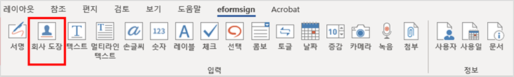
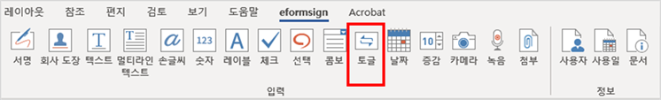
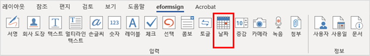

eformsign for Microsoft Office는 MS Office용 이폼사인 플러그인으로 엑셀, 워드, 파워포인트 등 Microsoft Office로 만든 문서를 입력 기능을 갖춘 전자문서로 변환하는 폼 에디터입니다. eformsign for Microsoft Office를 사용하면 엑셀, 워드, 파워포인트에서 기존에 만든 업무 양식(계약서, 신청서, 동의서, 품의서 등)을 간단하고 쉽게 전자문서로 변환할 수 있습니다.
eformsign for Microsoft Office를 다운로드 후 설치하면 Excel, Word, PowerPoint 등 MS Office에 리본메뉴로 추가되어 쉽게 사용할 수 있으며, 전자서명, 체크박스, 텍스트박스, 카메라, 녹음 등 다양한 입력 기능을 제공합니다.
eformsign for Microsoft Office를 이용하여 전자문서를 만드는 과정은 다음과 같습니다.
모든 컴포넌트는 ID를 가지고 있어야 합니다.
ID는 컴포넌트를 추가하면 자동으로 설정되지만, 컴포넌트에 무엇이 입력되는 지를 보여줄 수 있는 직관적인 단어로 변경하는 것이 좋습니다. 예를 들어, 홍길동, 이순신 등이 입력되는 텍스트 컴포넌트의 ID는 ‘이름’으로 설정합니다.
MS Office의 eformsign 리본 메뉴를 통해 체크박스, 콤보박스, 텍스트, 서명 등 다양한 컴포넌트를 지원하고 있습니다.
eformsign의 모든 컴포넌트는 공통 속성과 고유 속성을 가지고 있으며, OZ 컴포넌트 속성 창에서 공통 속성과 각 입력 기능의 고유 속성을 확인할 수 있습니다. 공통 속성으로는 ID와 툴팁 텍스트가 있으며, 각 속성의 의미는 다음과 같습니다.
ID: 컴포넌트 ID 각각의 컴포넌트를 식별할 수 있는 고유한 ID 입니다. 워크플로우 또는 필드 설정 단계에서 필수 입력 또는 편집 제한 시 컴포넌트 ID로 확인하여 지정할 수 있으며, CSV로 입력 데이터를 추출하여 확인하고자 할때 컴포넌트 ID로 구분할 수 있습니다.
툴팁 텍스트: 컴포넌트 툴립 텍스트 수신자가 문서 열람 시 Windows 환경에서는 컴포넌트에 마우스를 위치하면 툴팁 텍스트가 말풍선 형태로 표시되며, 모바일 환경에서는 컴포넌트가 다이얼로그로 실행될 때 툴팁 텍스트가 다이얼로그의 제목으로 표시됩니다.
Note
컴포넌트 속성 창은 입력 기능이 적용된 위치를 선택한 후 eformsign 메뉴의 속성 아이콘( )을 클릭하면 표시됩니다.
서명 컴포넌트를 추가하면 서명이 필요한 문서에서 아래와 같이 서명 팝업이 나타나고 서명을 직접 그리거나 텍스트를 입력해 서명을 입력할 수 있으며, 기존에 등록한 서명이 있는 경우 이를 사용할 수도 있습니다.
컴포넌트 속성
① ID
서명 컴포넌트의 ID를 입력합니다. 예를 들어, 계약자의 서명인 경우 컴포넌트 ID는 ‘계약자 서명’으로 합니다.
② 서명 유형
서명 시 어떤 서명을 사용할 것인지 선택합니다.
서명: 문서를 작성하는 사람이 미리 등록해 둔 내 서명이 있는 경우 서명란을 클릭 또는 서명 입력 버튼을 클릭하면 등록된 서명이 자동으로 입력됩니다.
이니셜:내 서명에 등록된 이니셜이 있는 경우 서명란을 클릭 또는 이니셜 입력 버튼을 클릭하면 등록된 이니셜이 자동으로 입력됩니다.
도장:내 서명에 등록된 도장이 있는 경우 서명란을 클릭 또는 도장 입력 버튼을 클릭하면 등록된 도장이 자동으로 입력됩니다.
직접 입력만 허용: 직접 입력만 허용을 체크하면 태블릿 PC 등으로 서명란에 직접 서명을 할 수 있도록 설정합니다. 서명란을 클릭하면 서명 팝업이 나타나며 그리기, 텍스트, 모바일, eformsign 앱 탭 중 원하는 방식으로 서명을 입력합니다.
Note
등록된 서명과 이니셜, 도장이 있는 경우에는 해당 서명이 서명란에 자동으로 입력되지만, 등록된 서명과 이니셜, 도장이 없는 경우 서명을 직접 입력할 수 있는 팝업이 나타납니다.
서명 유형을 한 가지만 선택할 경우 서명란을 클릭하면 해당 서명 유형이 바로 입력되며, 서명 유형을 두 가지 이상 선택할 경우 서명란을 클릭하면 다음과 같이 선택할 수 있는 서명 유형 버튼이 표시됩니다.
Tip
문서에 도장 날인하기
문서에 직접 서명이 아닌 직인이나 개인 도장을 사용해야 하는 경우가 있습니다. eformsign에서는 도장 이미지를 사용해 문서의 서명란에 도장을 찍을 수 있습니다.
① 일반 도장 이미지 사용
도장 이미지를 사용하려면, 서명 팝업에서 도장 탭을 클릭하고 도장 이미지를 선택한 후 확인 버튼을 누릅니다.
② 회사 도장 사용
회사 법인 인감 등 회사 직인이 있을 경우, 회사 관리 메뉴에서 회사 도장으로 등록한 후 회사 도장 컴포넌트로 안전하고 간편하게 사용할 수 있습니다.
③ 서명펜 두께
서명을 그릴 때 표시되는 선의 두께를 설정합니다.
④ 서명펜 색
서명을 그릴 때 표시하는 선의 색을 설정합니다.
Tip
서명일 자동입력 설정 방법
전자 계약서, 전자 동의서 등 서명이 들어가는 문서에 서명일이 자동으로 입력되도록 설정할 수 있습니다.
전자 서식으로 변환할 문서 파일(워드, 엑셀, 파워포인트)을 열거나 혹은 새 문서를 만듭니다.
서명할 곳에 서명 컴포넌트를 추가합니다.
추가한 서명 컴포넌트의 속성창에 컴포넌트 ID를 입력합니다. 예) 서명
서명일이 입력될 곳에 사용일 컴포넌트를 추가합니다.
사용일 컴포넌트의 속성창을 엽니다.
사용일 표시 유형을 입력 값을 수정한 날짜로 선택합니다.
하단에 나타나는 컴포넌트 ID 입력란에 서명 컴포넌트 ID인 ‘서명’을 입력합니다.
※ 사용일 컴포넌트의 ‘표시형식’을 설정하여 날짜 표시 형식을 원하는 형태로 변경할 수 있습니다.
회사 대표 도장, 사용 인감, 법인 인감 등 회사 관리 > 회사 도장에 등록된 회사 도장을 입력하고자 할 때 사용합니다.
회사 도장은 회사 관리 > 회사 도장에 등록된 도장과 사용권한을 부여받은 멤버만 사용할 수 있으며, 회사 도장에 대한 이력이 회사 도장 메뉴에 기록됩니다.

컴포넌트 속성
① ID
회사 도장 입력 항목의 ID를 입력합니다. 예를 들어, 법인 인감인 경우 입력 항목 ID를 ‘법인 인감’으로 설정합니다.
텍스트/멀티라인 컴포넌트의 ID를 입력합니다. 예를 들어, 홍길동, 이순신 등이 입력되는 컴포넌트 ID는 ‘이름’으로 합니다.
② 입력 타입
입력 타입을 일반 텍스트, 주소, 패스워드, 입력 규칙 사용자 지정 중 선택합니다.
일반 텍스트: 일반 텍스트 입력시 사용합니다.
주소: 주소 입력이 필요할 때 설정합니다. 선택 시 텍스트 입력항목을 클릭하면 주소 검색창에서 주소를 검색하여 입력할 수 있습니다.
(우편번호)주소: 우편번호를 포함한 주소 입력이 필요할 때 설정합니다.
패스워드: 입력한 내용이 표시되지 않도록 설정합니다. 텍스트 입력 시 입력한 내용이 별표(*) 또는 패스워드 문자(●)로 입력되어 입력한 내용을 숨길 수 있습니다. 입력된 내용은 PDF에서도 패스워드 문자로 숨겨지며, CSV 데이터를 다운로드 받을 때에만 확인할 수 있습니다.
③ 입력 규칙 설정
전화번호, 생년월일, 사업자등록번호 등 기본 입력 규칙 유형 중에서 선택하거나 직접 입력을 선택하여 규칙을 만들 수 있습니다.
Tip
입력 규칙 설정에서 직접 입력을 선택하면 숫자, 알파벳 등 입력받을 문자의 종류와 글자 수 등 규칙을 직접 설정할 수 있습니다. 예를 들어 여권번호를 입력하도록 하려면 여권번호 유형에 따라 규칙을 다음과 같이 설정할 수 있습니다.
여권번호는 ‘알파벳 + 숫자 8자리’ 또는 ‘알파벳 + 숫자3자리 + 알파벳 + 숫자 4자리’ 조합으로 구성되어 있어서 알파벳 대문자로 시작할 수 있도록 ‘>L’, 숫자만 입력할 수 있는 ‘0’, 숫자와 알파벳을 입력할 수 있는 ‘A’를 사용해 >L000A0000으로 규칙을 설정합니다.
④ 텍스트 조정
너비에 맞게 글자 수 제한: 입력 항목 크기에 맞게 글자 수를 자동으로 제한합니다. 짧은 텍스트는 항목 크기를 작게, 긴 텍스트를 입력해야 하는 경우에는 항목 크기를 크게 설정해 주세요.
글자 크기 자동 조정: 입력 항목 크기에 맞게 글자 크기를 자동으로 조정합니다.(글자 크기 축소)
입력 가능 글자 수 직접 입력: 입력 항목에 입력할 수 있는 최대 글자 수를 설정합니다. 옵션 선택 시 최대 글자 수로 기본 설정됩니다. 텍스트는 ‘1~1000자’, 멀티라인은 ‘1~8000자’까지 입력할 수 있습니다.
⑤ 키패드 타입(모바일만 적용)
스마트폰, 태블릿과 같은 모바일 환경에서 문서를 작성할 때 실행할 키패드 타입을 선택합니다.
선택 컴포넌트는 여러 항목 중 어떤 항목을 선택했는지 확인해야 할 때 사용합니다. 선택 컴포넌트의 선택값은 데이터 다운로드 시 여러 항목 중 선택한 항목명이 나타납니다.
워드, 파워포인트에서는 선택 컴포넌트가 직사각형 도형으로 표시됩니다.
항목의 내용은 컴포넌트 도형 안에 입력해야 합니다.
컴포넌트 속성
① ID
선택 컴포넌트의 선택 항목에는 선택 그룹마다 모두 같은 ID를 부여해야 합니다.
예를 들어, 1번 문제에 대해 1, 2, 3, 4, 5의 보기가 있는 경우 1, 2, 3, 4, 5 항목에 같은 ID ‘1번’을 부여합니다. 2번 문제의 1, 2, 3, 4, 5 보기에는 ‘2번’ ID를 부여합니다. 다음 예시 화면의 모든 선택 항목에 대한 ID는 ‘나이 선택’으로 지정합니다.
② 선택 스타일
선택 컴포넌트는 속성에서 스타일을 지정할 수 있습니다. 빨간 동그라미가 나타나는 ‘원’이 기본으로 설정되어 있으며 이외에 체크박스, 라디오 버튼 표시를 선택할 수 있습니다.
③ 비선택 스타일
선택되지 않은 항목에 표시될 스타일을 지정할 수 있습니다.
④ 다중 선택 가능
다중 선택 가능을 체크하면 1개 이상의 항목을 선택할 수 있습니다. 1개 이상의 항목을 선택한 경우 데이터 저장 시 선택된 여러 개의 항목이 콤마(,)로 구분되어 저장됩니다.
켜짐(ON), 꺼짐(OFF)과 같은 특정한 상태를 나타낼 때 사용합니다. 토글 컴포넌트를 사용하면 컴포넌트를 클릭할 때마다 미리 설정한 항목의 순서대로 입력값이 전환됩니다.

다음과 같이 컴포넌트를 클릭하여 양호, 불량 상태로 변경할 수 있습니다.
컴포넌트 속성
① ID
토글 컴포넌트의 ID를 입력합니다. 예를 들어, 첫번째 점검항목에 대한 컴포넌트인 경우 ‘점검항목 1’로 합니다.
② Items
토글 컴포넌트를 클릭할 때마다 전환될 항목 리스트를 입력합니다. 엔터(Enter)로 여러 항목을 구분합니다.
③ 입력 데이터 초기화 가능
입력 데이터 초기화 가능을 체크하면 입력된 항목을 삭제할 수 있습니다. 토글 컴포넌트는 한 번 항목을 선택하면 다른 항목으로 변경할 수는 있으나 항목 선택을 취소할 수는 없습니다. 그러나 입력 데이터 초기화 가능을 체크하면 아무것도 입력되지 않은 상태로 변경할 수 있습니다.
PC 환경: 컴포넌트를 오른쪽 마우스로 클릭하면 나타나는 팝업 메뉴에서 입력 데이터 초기화를 선택합니다.
날짜를 입력해야 할 때 사용합니다. 입력란을 클릭하면 날짜 선택창이 나타나며 원하는 날짜를 선택할 수 있습니다.

컴포넌트 속성
① ID
날짜 컴포넌트의 ID를 입력합니다. 예를 들어, 휴가 시작일을 선택하는 컴포넌트의 ID는 ‘휴가 시작일’로 합니다.
② 표시형식
날짜가 표시되는 형식을 지정합니다.
yyyy:연도를 표시합니다. (yyyy년 = 2020년)
MM:월을 표시합니다. 반드시 대문자로 표기해야 합니다. (MM월 = 8월)
dd:일을 표시합니다. (dd일 = 10일)
‘2020년 2월 5일’처럼 나타나게 하려면, 표시형식에 ‘yyyy년 MM월 dd일’로 입력합니다.
③ 입력 가능 최소/최대 날짜
날짜 선택 시 선택할 수 있는 최소, 최대 날짜를 지정하여 입력 가능한 날짜의 범위를 설정합니다.
④ 빈 값일 때 오늘 날짜 표시
문서를 열었을 때 자동으로 오늘 날짜가 입력되도록 설정합니다. 날짜 컴포넌트 추가 시 기본으로 체크되어 있습니다. 오늘 날짜가 입력된 입력란을 다시 클릭하면 다른 날짜를 선택할 수 있습니다.
⑤ 입력 데이터 초기화 가능
입력 데이터 초기화 가능을 체크하면 선택한 날짜를 삭제할 수 있습니다. 날짜 컴포넌트는 한 번 날짜를 선택하면 다른 날짜로 변경할 수는 있으나 날짜 선택을 취소할 수는 없습니다. 그러나 입력 데이터 초기화 가능 속성을 체크하면 아무것도 선택되지 않은 상태로 변경할 수 있습니다. 단, 아무것도 선택되지 않은 상태일 때 빈 값일 때 오늘 날짜 표시 속성이 체크된 경우 오늘 날짜로 선택됩니다.
PC 환경: 컴포넌트를 오른쪽 마우스로 클릭하면 나타나는 팝업 메뉴에서 ‘입력 데이터 초기화’를 선택합니다.
증감 버튼을 눌러 숫자를 입력할 수 있도록 설정할 때 사용합니다. 입력란을 클릭하면 오른쪽에 두 개의 화살표가 나타나며, 위 아래 화살표 버튼을 눌러 숫자를 증감시킬 수 있습니다.
PC 키보드 환경에서는 입력란에 직접 원하는 숫자를 입력할 수 있습니다. 스마트폰, 태블릿 환경에서는 입력 범위 숫자 리스트에서 스크롤하여 원하는 숫자를 선택할 수 있습니다.
컴포넌트 속성
① ID
컴포넌트의 ID를 입력합니다. 예를 들어, 예약 인원을 입력하는 경우 ID는 ‘예약 인원’으로 설정합니다.
② 증감 단위
입력란의 증가/감소 아이콘을 클릭할 때마다 현재 입력된 값에서 증감시킬 값을 입력합니다. 예를 들어, 증감 단위를 100으로 설정하고 문서를 작성할 때 입력란 오른쪽의 위 화살표(▲)를 클릭하면 입력된 값에서 200, 300, …으로 증가합니다.
③ 입력 가능 최솟값/최댓값
입력 가능 최솟값/최댓값을 지정하여 입력 가능한 숫자의 범위를 설정합니다.
예를 들어, 생년월일의 경우 보통 최솟값을 1900, 최댓값을 현재 년도, 증감 단위를 1로 지정합니다. 최솟값 또는 최댓값이 지정된 상태에서 범위 외의 숫자를 입력하면 자동으로 최솟값 또는 최댓값이 입력됩니다. 즉, 최댓값이 100으로 지정되었을 때, 입력란에 101을 입력하면 숫자가 자동으로 최댓값인 100으로 변경됩니다.
④ 입력 데이터 초기화 가능
입력 데이터 초기화 가능을 체크하면 입력된 숫자를 삭제할 수 있습니다. 증감 컴포넌트는 한 번 숫자를 입력하면 다른 숫자로 변경할 수는 있으나 숫자를 삭제할 수는 없습니다. 그러나 입력 데이터 초기화 가능을 체크하면 아무것도 입력되지 않은 상태로 변경할 수 있습니다.
PC 환경: 컴포넌트를 오른쪽 마우스로 클릭하면 나타나는 팝업 메뉴에서 입력 데이터 초기화를 선택합니다.
담당자 서명란에 서명한 담당자의 이름을 자동으로 입력되도록 하려면, 먼저 담당자 서명란에 서명 컴포넌트를 생성한 후 서명 컴포넌트의 ID를 ‘담당자 서명’으로 지정합니다. 담당자의 이름을 입력할 사용자 컴포넌트를 하나 더 생성합니다. 사용자 컴포넌트의 사용자 표시 유형 속성을 입력 값을 수정한 사람으로 선택하고, 컴포넌트 ID 입력란에 ‘담당자 서명’을 입력합니다.
③ 사용자 표시 정보
멤버의 정보 중 어떤 정보를 표시할지 선택합니다. 멤버 기본 정보 또는 사용자 정의 필드에 추가로 입력한 정보들 중 원하는 정보를 선택합니다.
{kind=link}
 )을 클릭하면 나타나는 사이드바 메뉴 중 가장 하단의 eformsign 폼 빌더 다운로드 버튼을 클릭합니다.
)을 클릭하면 나타나는 사이드바 메뉴 중 가장 하단의 eformsign 폼 빌더 다운로드 버튼을 클릭합니다.

{kind=link}
{kind=link}
{kind=link}
{kind=link}

{kind=link}


{kind=link}


{kind=link}

{kind=link}
{kind=link}
{kind=link}

{kind=link}


{kind=link}


{kind=link}
{kind=link}
{kind=link}

{kind=link}

{kind=link}
{kind=link}
{kind=link}

{kind=link}
 ) 아이콘을 클릭하면 다음의 로그인 페이지가 팝업 창으로 표시됩니다.
) 아이콘을 클릭하면 다음의 로그인 페이지가 팝업 창으로 표시됩니다. ) 아이콘을 클릭하면 템플릿 목록과 함께 새 템플릿 추가할 수 있는 화면이 나타납니다.
) 아이콘을 클릭하면 템플릿 목록과 함께 새 템플릿 추가할 수 있는 화면이 나타납니다.
{kind=link}
{kind=link}
{kind=link}